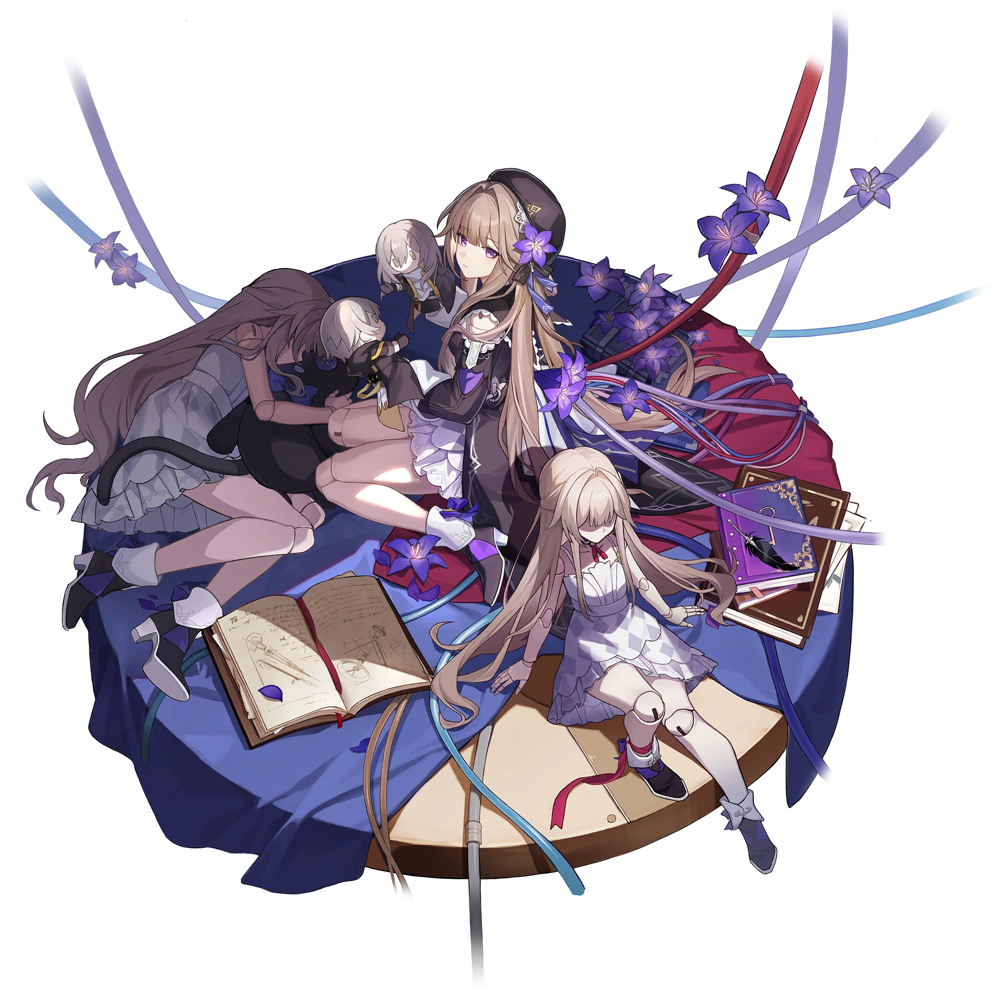
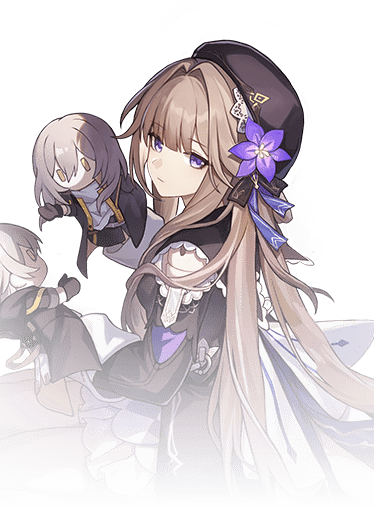

Descripcion del personaje
Herta (la kuru kuru para los amigos) es el primer personaje de la Vía de la Erudición que conseguiremos en Honkai Star Rail. Ella es una brillante científica que carece de empatía y la dueña de la Estación Espacial Herta, normalmente se muestra en su forma de marioneta basada en su aspecto de cuando era joven.
Destaca por ser uno de los personajes que más ataques adicionales puede realizar en el juego, pues su Talento le permite que cada vez que golpeemos a un enemigo que tenga sus PVs al 50% o menos, Herta realice un ataque adicional que golpeará a todos los enemigos que haya en el campo de batalla.
No es un personaje muy recomendado para la mayoría de situaciones, pero es uno de los personajes que más destaca en el modo de juego «Pura Ficción» debido a que como en este modo no paran de aparecer oleadas y oleadas de enemigos, pues podrá realizar montones de Ataques Adicionales y causar un muy buen daño.
Introduccion al personaje
Es una de las mentes más brillantes del universo del juego. Es conocida como la persona más inteligente de la Estación Espacial Herta y es la propietaria de dicha estación, que lleva su nombre. Además de ser una reconocida científica, Herta es miembro de la Circulo de genios, una organización compuesta por los mejores intelectos del universo que se dedican a la investigación científica y el avance tecnológico.
Herta tiene una personalidad algo excéntrica y distante, y muestra poca empatía o interés en las emociones humanas. Está mucho más enfocada en el progreso científico y en resolver enigmas cósmicos, lo que la hace parecer fría o desapegada. Es conocida por crear muñecos autómatas que se parecen a ella misma, y en muchos casos, prefiere interactuar con el mundo a través de estos en lugar de hacerlo en persona. En el juego, el modelo que los jugadores ven es un autómata con la apariencia de Herta cuando era más joven.
A pesar de su aparente desapego emocional, Herta tiene un gran orgullo por su inteligencia y por su colección de objetos extraños y raros, como los Simulados Primordiales, que son desafíos creados para analizar el potencial de los personajes y las diferentes realidades.

Calidad del personaje

VIA del personaje
Erudicion

Estadisticas del personaje
- PV: 952
- ATQ: 582
- DEF: 396
- VEL: 100